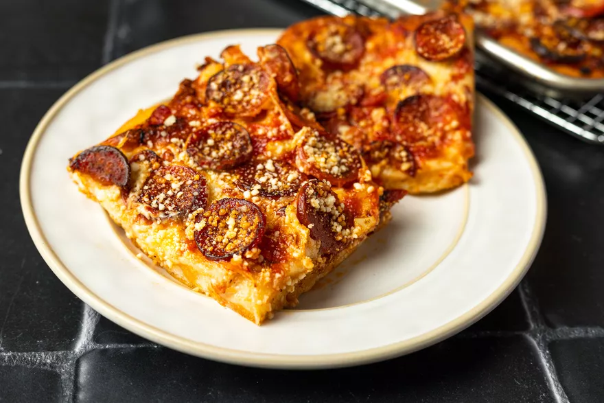

Sicilian-style Pizza Recipe

Recipe for sheet pan Sicilian-style pizza:
This recipe will make enough dough for one half-sheet pan size pizza. This is usually enough for our family of four, with leftovers for an extra lunch!
You only need some basic equipment for this recipe, including:
- Food Processor
- Kitchen Scale
- Mixing Bowl
- Half-sheet Pan
- Non-metal Spatula (preferably plastic or wood, to avoid scratching the sheet pan)
- Large Cutting Board
- Pizza Cutter
You will also need the following ingredients. The dough will be measured by grams on the scale as you add each ingredient.
When preparing to bake, you can top the pizza however you like, feel free to pile on whatever sounds good to you!
- 350 grams high-protein/bread flour
- 14 grams fine sea salt
- 6 grams instant yeast
- 20 grams olive oil + 1/4 cup for baking sheet
- 325 grams warm water (100-110 degrees farenheit)
Preparing the dough:
- Place your mixing bowl on the scale and press the TARE button to zero-out the weight.
- Add each ingredient, weighing by grams. Then TARE and add the next ingredient.
- Pour the ingredients into your food processor (fitted with a dough blade if you have one). Turn on the processor and, once the dough appears to be mixing well and pulled mostly away from the side of the bowl, set a timer for 30 seconds.
- Once the 30 seconds is complete, turn off the food processor and place the dough onto the oiled baking sheet and press the dough out slightly. It will still be pretty tight and pull back toward the center, but it will press out slightly.
- Cover the dough with plastic wrap to avoid drying out, and place in a warm area (an empty oven with the light on works great for this) for about 4 hours.
- Once the dough has rested for 4 hours, remove the plastic wrap and gently press and stretch the dough to the corners of the pan, then cover for another 1-2 hours.
- Preheat your oven to 550 degrees farenheit (or max) for an hour during the final dough rest.
- Once done resting, press the dough out to the corners if needed and add your desired toppings. Place in the middle oven rack for 5 minutes, then rotate 180 degrees and bake for another 5 minutes.
- Remove your pizza from the oven, use your spatula to shift out of the pan and onto your cutting board, and then cut and enjoy!